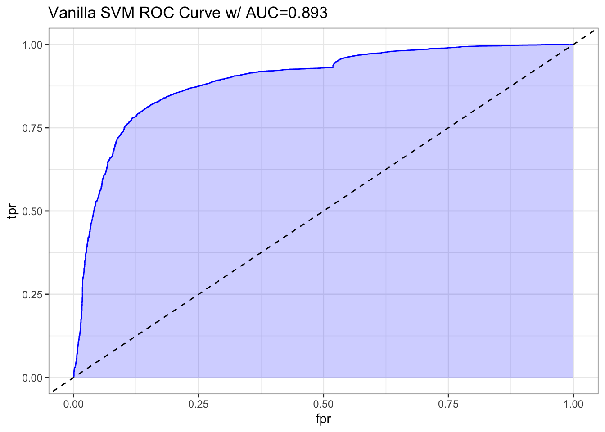

7 Support Vector Machine (SVM)
7.1 Introduction
Support Vector Machines (SVMs) are algorithms applicable for both classification and regression tasks. Linear (Vanilla Dot) and Radial Basis Function (RBF) kernels are commonly used choices. The Vanilla Dot kernel is simple and effective for linearly separable data, but it cannot handle complex non-linear relationships. RBF transforms the data into a high-dimensional space to model non-linear relationships, but it requires careful tuning for optimal performance.
In our SVM implementation, we will utilize both Vanilla SVM and RBF SVM.
7.2 Load Data
# Load data
train_svm <- read.csv('Train Test Set/train_svm.csv')
test_svm <- read.csv('Train Test Set/test_svm.csv')
# Display statistics
str(train_svm)## 'data.frame': 10379 obs. of 27 variables:
## $ gender_female : int 1 1 1 0 1 1 1 0 1 1 ...
## $ gender_male : int 0 0 0 1 0 0 0 1 0 0 ...
## $ age : int 24 34 19 19 25 26 23 27 26 20 ...
## $ fam_history_overweight1 : int 1 1 1 1 1 1 1 1 1 0 ...
## $ freq_consumption_hc_food1 : int 1 1 1 1 1 1 0 1 1 0 ...
## $ veg_freq : num 3 2.1 3 3 3 ...
## $ num_meals : num 3 2.98 3 3 3 ...
## $ food_between_meals_frequently : int 0 0 0 0 0 0 0 0 0 1 ...
## $ food_between_meals_never : int 0 0 0 0 0 0 0 0 0 0 ...
## $ food_between_meals_sometimes : int 1 1 1 0 1 1 1 1 1 0 ...
## $ smoke1 : int 0 0 0 0 0 0 0 0 0 0 ...
## $ water_daily : num 2.47 1.96 2.87 3 2.86 ...
## $ caloric_beverages1 : int 0 0 0 1 0 0 0 0 0 0 ...
## $ activity_freq : num 0.167 0.988 1.465 3 0.265 ...
## $ tech_use : num 0.487 0 0.656 0 0.673 ...
## $ alcohol_never : int 0 0 0 0 0 0 0 0 0 0 ...
## $ alcohol_sometimes : int 1 1 1 1 1 1 1 1 1 1 ...
## $ transport_bike : int 0 0 0 0 0 0 0 0 0 0 ...
## $ transport_motorbike : int 0 0 0 0 0 0 0 0 0 0 ...
## $ transport_public_transportation: int 1 0 1 1 1 1 1 1 1 1 ...
## $ transport_walking : int 0 0 0 0 0 0 0 0 0 0 ...
## $ obesity_leveloverweight : int 1 1 1 1 1 1 1 1 1 0 ...
## $ eating_habit_binary : num 2.67 2.36 2.67 2.67 2.67 ...
## $ physical_activity_binary : num -0.32 0.988 0.809 3 -0.408 ...
## $ age_group_young_adult : int 1 1 1 1 1 1 1 1 1 1 ...
## $ age_group_adult : int 0 0 0 0 0 0 0 0 0 0 ...
## $ age_group_senior : int 0 0 0 0 0 0 0 0 0 0 ...## gender_female gender_male age fam_history_overweight1
## Min. :0.0000 Min. :0.0000 Min. :14.00 Min. :0.0000
## 1st Qu.:0.0000 1st Qu.:0.0000 1st Qu.:20.00 1st Qu.:1.0000
## Median :1.0000 Median :0.0000 Median :23.00 Median :1.0000
## Mean :0.5079 Mean :0.4921 Mean :23.81 Mean :0.8177
## 3rd Qu.:1.0000 3rd Qu.:1.0000 3rd Qu.:26.00 3rd Qu.:1.0000
## Max. :1.0000 Max. :1.0000 Max. :61.00 Max. :1.0000
## freq_consumption_hc_food1 veg_freq num_meals
## Min. :0.0000 Min. :1.000 Min. :1.000
## 1st Qu.:1.0000 1st Qu.:2.000 1st Qu.:3.000
## Median :1.0000 Median :2.445 Median :3.000
## Mean :0.9166 Mean :2.452 Mean :2.758
## 3rd Qu.:1.0000 3rd Qu.:3.000 3rd Qu.:3.000
## Max. :1.0000 Max. :3.000 Max. :4.000
## food_between_meals_frequently food_between_meals_never
## Min. :0.0000 Min. :0.00000
## 1st Qu.:0.0000 1st Qu.:0.00000
## Median :0.0000 Median :0.00000
## Mean :0.1212 Mean :0.01253
## 3rd Qu.:0.0000 3rd Qu.:0.00000
## Max. :1.0000 Max. :1.00000
## food_between_meals_sometimes smoke1 water_daily
## Min. :0.0000 Min. :0.00000 Min. :1.000
## 1st Qu.:1.0000 1st Qu.:0.00000 1st Qu.:1.796
## Median :1.0000 Median :0.00000 Median :2.000
## Mean :0.8446 Mean :0.01224 Mean :2.029
## 3rd Qu.:1.0000 3rd Qu.:0.00000 3rd Qu.:2.536
## Max. :1.0000 Max. :1.00000 Max. :3.000
## caloric_beverages1 activity_freq tech_use alcohol_never
## Min. :0.00000 Min. :0.00000 Min. :0.0000 Min. :0.0000
## 1st Qu.:0.00000 1st Qu.:0.00705 1st Qu.:0.0000 1st Qu.:0.0000
## Median :0.00000 Median :1.00000 Median :0.5740 Median :0.0000
## Mean :0.03276 Mean :0.98097 Mean :0.6147 Mean :0.2461
## 3rd Qu.:0.00000 3rd Qu.:1.58652 3rd Qu.:1.0000 3rd Qu.:0.0000
## Max. :1.00000 Max. :3.00000 Max. :2.0000 Max. :1.0000
## alcohol_sometimes transport_bike transport_motorbike
## Min. :0.0000 Min. :0.000000 Min. :0.000000
## 1st Qu.:0.0000 1st Qu.:0.000000 1st Qu.:0.000000
## Median :1.0000 Median :0.000000 Median :0.000000
## Mean :0.7289 Mean :0.001734 Mean :0.001927
## 3rd Qu.:1.0000 3rd Qu.:0.000000 3rd Qu.:0.000000
## Max. :1.0000 Max. :1.000000 Max. :1.000000
## transport_public_transportation transport_walking obesity_leveloverweight
## Min. :0.0000 Min. :0.00000 Min. :0.0000
## 1st Qu.:1.0000 1st Qu.:0.00000 1st Qu.:0.0000
## Median :1.0000 Median :0.00000 Median :1.0000
## Mean :0.8056 Mean :0.02226 Mean :0.7262
## 3rd Qu.:1.0000 3rd Qu.:0.00000 3rd Qu.:1.0000
## Max. :1.0000 Max. :1.00000 Max. :1.0000
## eating_habit_binary physical_activity_binary age_group_young_adult
## Min. :1.000 Min. :-2.0000 Min. :0.0000
## 1st Qu.:2.309 1st Qu.:-0.2790 1st Qu.:1.0000
## Median :2.333 Median : 0.2867 Median :1.0000
## Mean :2.375 Mean : 0.3662 Mean :0.9019
## 3rd Qu.:2.667 3rd Qu.: 1.0000 3rd Qu.:1.0000
## Max. :3.000 Max. : 3.0000 Max. :1.0000
## age_group_adult age_group_senior
## Min. :0.00000 Min. :0.000000
## 1st Qu.:0.00000 1st Qu.:0.000000
## Median :0.00000 Median :0.000000
## Mean :0.05222 Mean :0.003276
## 3rd Qu.:0.00000 3rd Qu.:0.000000
## Max. :1.00000 Max. :1.000000## gender_female gender_male age fam_history_overweight1
## 1 1 0 24 1
## 2 1 0 34 1
## 3 1 0 19 1
## 4 0 1 19 1
## 5 1 0 25 1
## 6 1 0 26 1
## freq_consumption_hc_food1 veg_freq num_meals food_between_meals_frequently
## 1 1 3.000000 3.000000 0
## 2 1 2.103335 2.977909 0
## 3 1 3.000000 3.000000 0
## 4 1 3.000000 3.000000 0
## 5 1 3.000000 3.000000 0
## 6 1 3.000000 3.000000 0
## food_between_meals_never food_between_meals_sometimes smoke1 water_daily
## 1 0 1 0 2.472903
## 2 0 1 0 1.964435
## 3 0 1 0 2.865590
## 4 0 0 0 3.000000
## 5 0 1 0 2.863513
## 6 0 1 0 1.347559
## caloric_beverages1 activity_freq tech_use alcohol_never alcohol_sometimes
## 1 0 0.167086 0.486868 0 1
## 2 0 0.987521 0.000000 0 1
## 3 0 1.464674 0.655571 0 1
## 4 1 3.000000 0.000000 0 1
## 5 0 0.264831 0.673210 0 1
## 6 0 0.217455 0.625350 0 1
## transport_bike transport_motorbike transport_public_transportation
## 1 0 0 1
## 2 0 0 0
## 3 0 0 1
## 4 0 0 1
## 5 0 0 1
## 6 0 0 1
## transport_walking obesity_leveloverweight eating_habit_binary
## 1 0 1 2.666667
## 2 0 1 2.360415
## 3 0 1 2.666667
## 4 0 1 2.666667
## 5 0 1 2.666667
## 6 0 1 2.666667
## physical_activity_binary age_group_young_adult age_group_adult
## 1 -0.319782 1 0
## 2 0.987521 1 0
## 3 0.809103 1 0
## 4 3.000000 1 0
## 5 -0.408379 1 0
## 6 -0.407895 1 0
## age_group_senior
## 1 0
## 2 0
## 3 0
## 4 0
## 5 0
## 6 07.3 Model SVM
7.3.1 Vanilla SVM
We will begin by implementing a vanilla kernel SVM. We suspect that this may result in lower accuracy compared to RBF due to our dataset’s complexity and less straightforward nature.
# Build a vanilla model
model_svm_vanilla <- ksvm(
obesity_leveloverweight ~ .,
data = train_svm,
kernel = 'vanilladot'
)## Length Class Mode
## 1 ksvm S47.4 Evaluate SVM
7.4.1 Vanilla SVM
# Make a prediction
prediction_svm_vanilla_probability <- predict(model_svm_vanilla, test_svm)
prediction_svm_vanilla <- ifelse(prediction_svm_vanilla_probability >= 0.5, 1, 0)
summary(prediction_svm_vanilla_probability)## V1
## Min. :-0.1660
## 1st Qu.: 0.8624
## Median : 0.9609
## Mean : 0.7994
## 3rd Qu.: 0.9936
## Max. : 1.1455# Perform confusion matrix
cm_svm_vanilla <- confusionMatrix(
as.factor(prediction_svm_vanilla),
as.factor(test_svm$obesity_leveloverweight),
positive = '1'
)
cm_svm_vanilla## Confusion Matrix and Statistics
##
## Reference
## Prediction 0 1
## 0 1329 523
## 1 1434 7093
##
## Accuracy : 0.8114
## 95% CI : (0.8038, 0.8189)
## No Information Rate : 0.7338
## P-Value [Acc > NIR] : < 2.2e-16
##
## Kappa : 0.4607
##
## Mcnemar's Test P-Value : < 2.2e-16
##
## Sensitivity : 0.9313
## Specificity : 0.4810
## Pos Pred Value : 0.8318
## Neg Pred Value : 0.7176
## Prevalence : 0.7338
## Detection Rate : 0.6834
## Detection Prevalence : 0.8216
## Balanced Accuracy : 0.7062
##
## 'Positive' Class : 1
## Based on the confusion matrix, we observe that the model achieves an accuracy of 0.8114, sensitivity of 0.9313, and a Kappa coefficient of 0.4607. We will assess these results towards the conclusion of the assignment when we have completed stacked models.
# Plot AUC
pred <- ROCR::prediction(
prediction_svm_vanilla_probability,
test_svm$obesity_leveloverweight
)
perf <- ROCR::performance(pred, measure = "tpr", x.measure = "fpr")
auc <- ROCR::performance(pred, measure="auc")
auc <- round(auc@y.values[[1]],3)
roc.data <- data.frame(fpr=unlist(perf@x.values),
tpr=unlist(perf@y.values),
model="GLM")
ggplot(roc.data, aes(x=fpr, ymin=0, ymax=tpr)) +
geom_ribbon(alpha=0.2, fill = "blue") +
geom_line(aes(y=tpr), col = "blue") +
geom_abline(intercept = 0, slope = 1, lty = "dashed") +
labs(title = paste0("Vanilla SVM ROC Curve w/ AUC=", auc)) +
theme_bw()
7.4.2 RBF SVM
# Make a prediction
prediction_svm_rbf_probability <- predict(model_svm_rbf, test_svm)
prediction_svm_rbf <- ifelse(prediction_svm_rbf_probability >= 0.5, 1, 0)
# Perform confusion matrix
cm_svm_rbf <- confusionMatrix(
as.factor(prediction_svm_rbf),
as.factor(test_svm$obesity_leveloverweight),
positive = '1'
)
cm_svm_rbf## Confusion Matrix and Statistics
##
## Reference
## Prediction 0 1
## 0 1904 527
## 1 859 7089
##
## Accuracy : 0.8665
## 95% CI : (0.8598, 0.8729)
## No Information Rate : 0.7338
## P-Value [Acc > NIR] : < 2.2e-16
##
## Kappa : 0.6446
##
## Mcnemar's Test P-Value : < 2.2e-16
##
## Sensitivity : 0.9308
## Specificity : 0.6891
## Pos Pred Value : 0.8919
## Neg Pred Value : 0.7832
## Prevalence : 0.7338
## Detection Rate : 0.6830
## Detection Prevalence : 0.7658
## Balanced Accuracy : 0.8100
##
## 'Positive' Class : 1
## Based on the confusion matrix, we observe that the model achieves an accuracy of 0.8665, sensitivity of 0.9308, and a Kappa coefficient of 0.6446. We will assess these results towards the conclusion of the assignment when we have completed stacked models.
pred <- ROCR::prediction(
prediction_svm_rbf_probability,
test_svm$obesity_leveloverweight
)
perf <- ROCR::performance(pred, measure = "tpr", x.measure = "fpr")
auc <- ROCR::performance(pred, measure="auc")
auc <- round(auc@y.values[[1]],3)
roc.data <- data.frame(fpr=unlist(perf@x.values),
tpr=unlist(perf@y.values),
model="GLM")
ggplot(roc.data, aes(x=fpr, ymin=0, ymax=tpr)) +
geom_ribbon(alpha=0.2, fill = "blue") +
geom_line(aes(y=tpr), col = "blue") +
geom_abline(intercept = 0, slope = 1, lty = "dashed") +
labs(title = paste0("RBF SVM ROC Curve w/ AUC=", auc)) +
theme_bw()